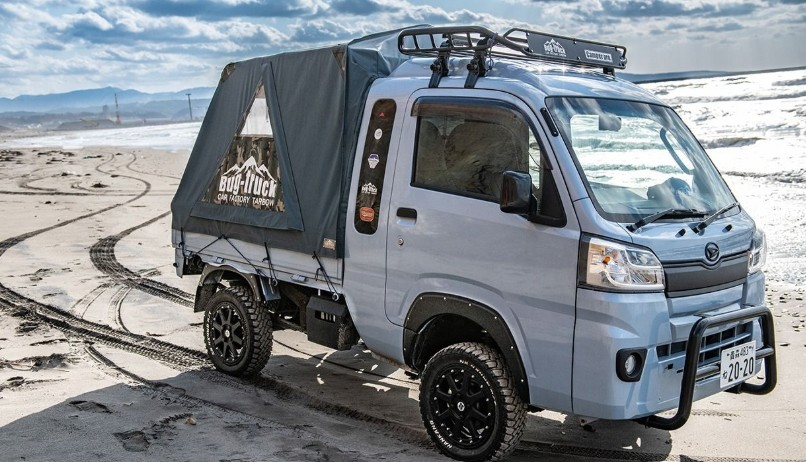
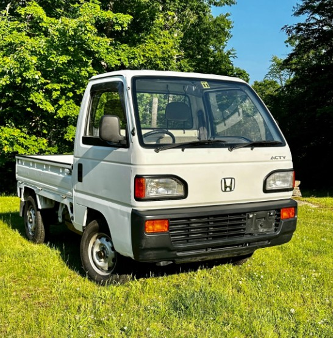
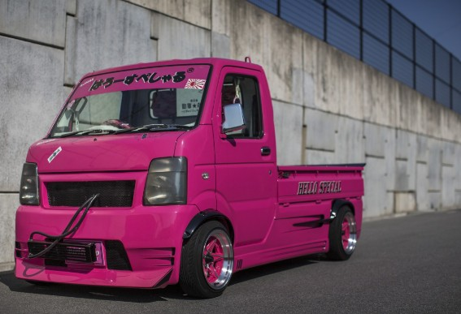

Let me introduce to you... The Kei Truck!
Practical, Affordable, Iconic
Kei trucks, or “Kei-class light trucks,” were originally designed in Japan to fit strict size and tax regulations while giving farmers and tradesmen an affordable, efficient way to get work done. Over the decades, they’ve evolved into incredibly versatile machines. Capable of hauling loads, navigating tight streets, and being modified into everything from off-road rigs to mobile cafes. Today, they’re popular among collectors and DIY enthusiasts worldwide, blending utility, character, and a touch of nostalgia into one unmistakably Japanese icon.


